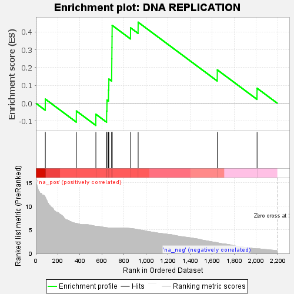
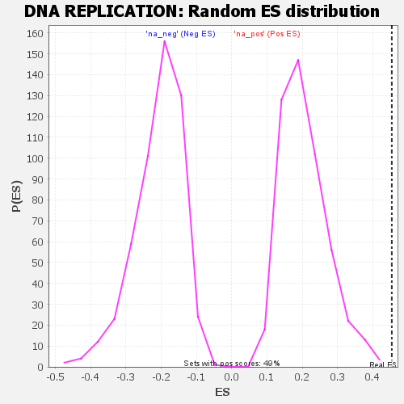

| | | Dataset | GSEA RNK clr Maaslin2 MucosalvsLuminal KO - ProximalColon.rnk |
| Phenotype | NoPhenotypeAvailable |
| Upregulated in class | na_pos |
| GeneSet | DNA REPLICATION |
| Enrichment Score (ES) | 0.45423746 |
| Normalized Enrichment Score (NES) | 2.2076743 |
| Nominal p-value | 0.0 |
| FDR q-value | 0.009662929 |
| FWER p-Value | 0.062 |
Table: GSEA Results Summary

Fig 1: Enrichment plot: DNA REPLICATION
Profile of the Running ES Score & Positions of GeneSet Members on the Rank Ordered List

Fig 2: DNA REPLICATION: Random ES distribution
Gene set null distribution of ES for DNA REPLICATION